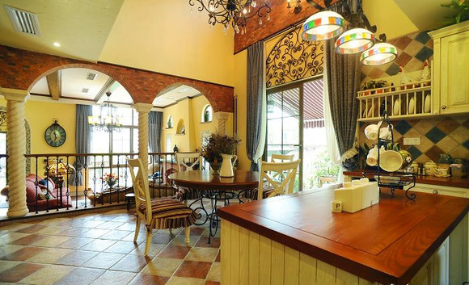

茶不仅仅是一种饮品，它更是一种文化，一种艺术，一种哲学。
- 护理
美式风格，顾名思义是来自于美国的装修和装饰风格。是殖民地风格中最著名的代表风格，某种意义上已经成了殖民地风格的代名词。美国是个移民国家，欧洲各国各民族人民来到美洲殖民地，把各民族各地区的装饰装修和家具风格都带到了美国，同时由于美国地大物博，极大的放开了移民们对尺寸的欲望，使得美式风格以宽大，舒适，杂糅各种风格而著称。
了解更多》

- 价格
文艺复兴前的西欧，家具艺术经过浩劫与长时期的萧条后，在9至11世纪又重新兴起，并形成独特的风格——地中海式风格。地中海风格家具以其极具亲和力的田园风情及柔和色调和组合搭配上的大气很快被地中海以外的大区域人群所接受。物产丰饶、长海岸线、建筑风格的多样化、日照强烈形成的风土人文，这些因素使得地中海具有自由奔放、色彩多样明亮的特点。
了解更多》